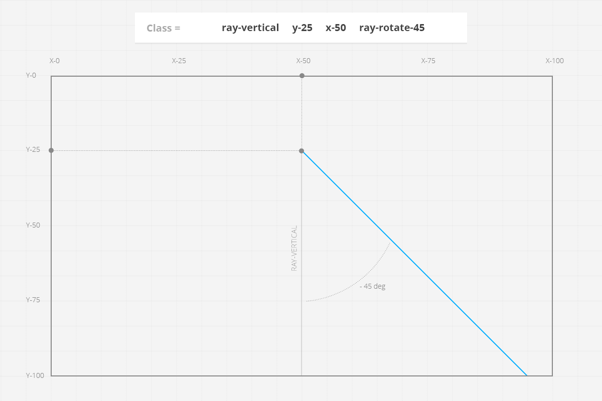

Installing
Files structure
- Documentation – folder contains the documentation to this work.
- PSD – folder contains graphic source files of the work. They can be needed in case of redesign by other designer.
- HTML – contains the main files of the work: .html, .css, .js etc. In the sequel we will copy exactly these files on your server.
- image-intro – version with image against the background of Intro section.
- image-intro-minimal – version with image against the background of Intro section (does not contain application screenshot).
- slider-intro – version with slider against the background of Intro section.
- slider-intro-minimal – version with slider against the background of Intro section (does not contain application screenshot)
- typed-intro – version with image against the background of Intro section and typed slogan.
- typed-intro-minimal – version with image against the background of Intro section and typed slogan (does not contain application screenshot).
- video-intro – version with video background.
- video-intro-minimal – version with video background (does not contain application screenshot).
- images – folder contains images for theme.
- fonts – folder contains fonts of the work.
- css – here you will find theme style sheets.
- scripts – folder contains scripts which are necessary for correct theme operation (.js, .php, etc.).
- index.html – it is the main theme file. It combines all the ingredients and can be open with any browser on your computer.
Uploading
After you chose an example suitable you, it is necessary upload all contents of the folder (index.html and the css, scripts, fonts, images folders) on your server. For this purpose you can use online FTP the manager of yours a hosting or use the desktop version (FileZilla for example).
- Enter on the server by means of the manager and choose the necessary folder for downloading.
- Upload the chosen files (index.html and the css, js, fonts and images folders).
- Once the files are done uploading, you can try access your website via browser.
Performance of this operation means that you have the server space and the domain.
Code Structure
HTML Structure
Page is based on latest version of the Bootstrap framework (3.X) and is fully compatible with it. HTML marking of the page consists from 2 the main parts, <Head> and <Body>.
In <Head> we connect all external files which we are necessary for our work of this page (css and by javascript), an also we determine specifications.
To <Body> be in the main content of the page (our blocks with functionality). Each block is marked by special comments at the beginning and at the end (this applies to both html and css files). The general structure <Body>:
block code here
block code here
...
block code here
block code here
CSS Structure
Files contained in CSS folder (and their short description):
- style.css – the main style sheet. It responds for the appearance of your project.
- style-dark.css – the main style sheet for Dark version.
- simple-line-icons.css – style sheet of "Simple Line Icons" font.
- icomoon-soc-icons.css – style sheet of "IcoMoon" font.
- magnific-popup.css – style sheet of "Magnific Popup" script (necessary for pop-ups displaying).
- animate.css – style sheet which contains animation styles (here is the full version).
- bootstrap.min.css – style sheet of bootstrap framework.
- style-black.css – style sheet with styles for black color scheme.
- style-dark-black.css – style sheet with styles for black color scheme (Dark version).
- style-gold.css – style sheet with styles for golden color scheme.
- style-green.css – style sheet with styles for green color scheme.
- style-purple.css – style sheet with styles for purple color scheme.
- style-red.css – style sheet with styles for red color scheme.
File style.css contains the main styles of your project, its code is structured in the following way:
/*--------------------- FONT (OPEN SANS) IMPORT FROM GOOGLE FONTS ----------------------*/
/*----------------------------------------------------------------------------------------
COMMON STYLES
-----------------------------------------------------------------------------------------*/
Common styles
/*----------------------------------------------------------------------------------------
PRELOADER
----------------------------------------------------------------------------------------*/
Preloader styles
...
/*----------------------------------------------------------------------------------------
FOOTER
----------------------------------------------------------------------------------------*/
Styles for Retina displays
If you want to change a certain section – just find it with the narrative and then change to the style you need.
Scripts
Files contained in SCRIPTS folder (and their short description):
- сustom.js – file contains all the specific settings of scripts attached, and also small self-made scripts.
- bootstrap.min.js – contains the functions of bootstrap framework.
- jquery.validate.min.js – validation script.
- jquery-1.8.2.min.js – JavaScript library. Very important file, don't delete.
- owl.carousel.min.js – plugin that create beautiful responsive carousel slider.
- wow.min.js – plugin that help reveal animations when you scroll.
- html5shiv.js – provides basic HTML5 styling for Internet Explorer 6-9, Safari 4.x (and iPhone 3.x), and Firefox 3.x.
- respond.min.js – a fast & lightweight polyfill for min/max-width CSS3 Media Queries (for IE 6-8, and more).
- placeholders.jquery.min.js - a script for browsers not supporting placeholder property.
- jquery.stellar.min.js - a jQuery plugin that provides parallax scrolling effects to any scrolling element.
- jquery.superslides.min.js - a fullscreen slider for jQuery.
- smoothscroll.js - SmoothScroll for websites.
- bigvideo.js - This plugin makes it easy to add fit-to-fill background video to websites
- retina.min.js – Open source script that makes it easy to serve high-resolution images to devices with retina displays.
- jquery.magnific-popup.min.js – Fast, light and responsive lightbox plugin, for jQuery and Zepto.js.
- subscribe.php – script for subscription through Mailchimp.
- contact.php – script for data sending from contact form.
Customization.
Logotype.
In order to add your logo, you need to open index.html file code, find the code you see below and change default data to yours.
Or just change the logo image in a folder with pictures (the picture size must be identical, if it is not – change the size in index.html page code).
<div class="col-md-8 col-sm-12"> <img class="logo" src="./images/logo.png" alt="Your Logo" height="70" width="144" /> <h1 class="slogan">The Best Start Up For <br> Your Elegant App</h1>
Do not forget to change images for Retina displays, they have @2x prefix (Example: logo@2x.png).
Preloader.
If you want to change the type of preloader, you need to open html file, find a preloader code (look below) and change class, choose between "battery" and "radius".
<!-- PRELOADER --> <div id="preloader"> <div class="radius inner"> <div class="load-line"></div> </div> </div>
<!-- PRELOADER --> <div id="preloader"> <div class="battery inner"> <div class="load-line"></div> </div> </div>
Mockups.
To add the image of your product (application or site) easy, we prepared new mockups.
All you need is to open PSD file with a mockup needed and add there a screenshot of your product. Also you can choose different types of device in PSD file (if this option is provided), for instance, phone with different OS. All mock-ups are kept in PSD folder (in archive root).
Light & Dark versions.
To change color gamma from Light to Dark, replace "style.css" on "style-dark.css".
Rays.
In order to put ray in Intro section, open index.html page code, find <header> section and put the ray code at the beginning as it is shown below.
<!-- INTRO BEGIN --> <header id="full-intro" class="intro-block bg-color-main" > <div class="ray ray-vertical y-100 x-50 ray-rotate-135 laser-blink hidden-sm hidden-xs" ></div> <div class="container"> <div class="row">
Ray constructor:
- ray-vertical / ray-horizontal - orientation( horizontal or vertical);
- y-0 / y-25 / y-50 / y-75 / y-100 - axis Y coordinates;
- x-0 / x-25 / x-50 / x-75 / x-100 - axis X coordinates;
- ray-rotate45 / ray-rotate-45 / ray-rotate135 / ray-rotate-135 - rotation;
- laser-blink - ray animation;
- hidden-sm hidden-xs - hide on small screen resolution;

Сomplete collection of rays here
Intro Slider: image exchange.
Just change the images in Images folder to yours.
Or find slider in Index.html file code (see below) and change paths to file to yours (src).
<div id="slides" data-stellar-ratio="0.4"> <div class="slides-container" > <img src="images/1.jpg" alt=""> <img src="images/2.jpg" alt=""> <img src="images/3.jpg" alt=""> </div> </div>
Intro Slider: settings.
If you want to change the settings of Intro Slider, you need to open custom.js file, find a slider code (look below) and change the settings you need.
//------------------------------------------------------------------------
// INTRO SUPERSLIDER SETTINGS
//------------------------------------------------------------------------
$("#slides").superslides({
play: 8000, //Milliseconds before progressing to next slide automatically. Use a falsey value to disable.
animation: "fade", //slide or fade. This matches animations defined by fx engine.
pagination: false, //Generate pagination. Add an id to your slide to use custom pagination on that slide.
inherit_height_from:"#intro" // Accepts window or element selector. Use to constrain slider to an element's height.
// more options: https://github.com/nicinabox/superslides
});
Video background: settings.
If you want to change the settings of video background, you need to open custom.js file, find a background code (look below) and change the settings you need.
//------------------------------------------------------------------------
// VIDEO BACKGROUND SETTINGS
//------------------------------------------------------------------------
$(function() {
var BV = new $.BigVideo({container: $('.block-video-bg'), useFlashForFirefox:false});
BV.init();
if(navigator.userAgent.match(/iPhone|iPad|iPod|Android|BlackBerry|IEMobile/i)) {
BV.show('images/video_gag.jpg');
} else{
if (!!window.opera || navigator.userAgent.indexOf(' OPR/') >= 0) {
BV.show('video_bg.ogv', {doLoop:true, ambient:true});
} else{
BV.show('video_bg.mp4', {doLoop:true, ambient:true, altSource:'video_bg.ogv'});
}
BV.getPlayer().on('loadedmetadata', function(){
$('#big-video-wrap video').fadeIn('slow');
});
}
});
also you can play a series of ambient background videos
$(function() {
var BV = new $.BigVideo();
BV.init();
BV.show(['vid1.mp4','vid2.mp4','vid3.mp4'],{ambient:true});
});
Testimonials slider and Screenshot Slider: settings.
If you want to change the settings of sliders, you need to open custom.js file, find slider code (look below) and change the settings you need.
//------------------------------------------------------------------------
// SCREENSHOTS SLIDER SETTINGS
//------------------------------------------------------------------------
var owl = $("#screenshots-slider");
owl.owlCarousel({
items : 5,
itemsDesktop : [1400,4],
itemsDesktopSmall : [1200,3],
itemsTablet: [900,2],
itemsMobile : [600,1],
stopOnHover:true
});
//------------------------------------------------------------------------
// TESTIMONIALS SLIDER SETTINGS
//------------------------------------------------------------------------
var owl = $("#testimonials-slider");
owl.owlCarousel({
singleItem:true,
autoPlay:5000,
stopOnHover:true
});
Contact form: settings.
Insert of your e-mail address.
Open the script of contact form data sending (scripts/contact.php) and type your e-mail address into "$to" field (look below).
<?php
if ($_SERVER['REQUEST_METHOD'] == 'POST') {
if(!empty($_POST['contactname']) && !empty($_POST['contactemail']) && !empty($_POST['contactmessage'])) {
$to = 'your@email.com'; // Your e-mail address here.
$body = "\nName: {$_POST['contactname']}\nEmail: {$_POST['contactemail']}\n\n\n{$_POST['contactmessage']}\n\n";
mail($to, "Message from yoursite.com", $body, "From: {$_POST['contactemail']}"); // E-Mail subject here.
}
}
?>
Extension of contact form with additional field.
1. Add a new field code into HTML page code (look below).
<form action="scripts/contact.php" role="form" id="contact_form"> <div class="form-group"> <input type="text" class="form-control" id="contact_name" placeholder="Full name" name="name"> </div> <div class="form-group"> <input type="text" class="form-control" id="contact_new_field" placeholder="Your new field" name="new_field"> </div> <div class="form-group"> <input type="email" class="form-control" id="contact_email" placeholder="Email Address" name="email"> </div>
2. Update a validation script of contact form in custom.js file (look below), add a validation rule and error message.
//------------------------------------------------------------------------------------
// CONTACT FORM VALIDATION'S SETTINGS
//------------------------------------------------------------------------------------
$('#contact_form').validate({
onfocusout: false,
onkeyup: false,
rules: {
name: "required",
message: "required",
new_field:"required",
email: {
required: true,
email: true
}
},
errorPlacement: function(error, element) {
error.insertAfter(element);
},
messages: {
name: "What's your name?",
message: "Type your message",
new_field:"New field error message",
email: {
required: "What's your email?",
email: "Please, enter a valid email"
}
},
3. Update a script of contact data transmission in custom.js file (look below), add data transmission of a new field.
$('#contact_form').submit(function() {
// submit the form
if($(this).valid()){
$('#contact_submit').button('loading');
var action = $(this).attr('action');
$.ajax({
url: action,
type: 'POST',
data: {
contactname: $('#contact_name').val(),
contactemail: $('#contact_email').val(),
contactnewfield: $('#contact_new_field').val(), //ID from html page
contactmessage: $('#contact_message').val()
},
4. Update a script of contact data transmission onto contact.php server (look below), add a variable of a new field.
<?php
if ($_SERVER['REQUEST_METHOD'] == 'POST') {
if(!empty($_POST['contactname']) && !empty($_POST['contactemail']) && !empty($_POST['contactmessage']) && !empty($_POST['contactnewfield'])) {
$to = 'your@email.com'; // Your e-mail address here.
$body = "\nName: {$_POST['contactname']}\nEmail: {$_POST['contactemail']}\n\n\n{$_POST['contactmessage']}\n\n{$_POST['contactnewfield']}\n\n";
mail($to, "Message from yoursite.com", $body, "From: {$_POST['contactemail']}"); // E-Mail subject here.
}
}
?>
Subscription: settings.
In order to customize a subscription through Mailchimp, you need to create a new account and get your own apiKey and listID. Then you need to add these data ina subscription script, subscribe.php file (look below). Do not forget to change Datacenter to yours. You can learn your DataCenter from apiKey (for example: us-3).
<?php $apiKey = ''; // your mailchimp API KEY here $listId = ''; // your mailchimp LIST ID here $double_optin=false; $send_welcome=false; $email_type = 'html'; $email = $_POST['newsletter_email'];
Font Icons exchange. "Simple Line Font".
All 160 simple line icons are now embedded in a webfont for more convenient use on the web or in a native application. Big thanks to Jamal Jama for creating this awesome webfont.
To change an icon to one you need - just change a class of this icon.
For example: you can see below an element with icon-screen-desktop. In order to change this icon – choose the icon you need from this list and put its class instead of "icon-screen-desktop".
<section id="services"> <div class="container"> <div class="row"> <div class="col-md-4 service"> <i class="icon-screen-desktop"></i> <h4>Responsive design</h4> <p>Etiam dictum auctor interdum. Aenean egestas vehicula purus in euismod. Quisque gravida commodo velit, eget porta leo sagittis vel. </p> </div>
Update to v1.4 (Add collapse menu).
Open scripts/custom.js and paste the code below:
//------------------------------------------------------------------------
// NAVBAR HIDE ON CLICK (COLLAPSED) SCRIPT
//------------------------------------------------------------------------
$('.nav a').on('click', function(){
if($('.navbar-toggle').css('display') !='none'){
$(".navbar-toggle").click()
}
});
PSD files
Files contained in PSD folder (and their short description):
- ray_landing.psd - graphic source of a landing page.
- ray_blog.psd - graphic source of a blog page.
- ray_single.psd - graphic source of a single page.
- intro_screen.psd - application mockup of Intro section.
- features_screen.psd - application mockup of Features section.
- innovation_screen.psd - application mockup of Innovation section.
- screen_couple_above.psd - application mockup of Benefits, above layer.
- screen_couple_beyond.psd - application mockup of Benefits, beyond layer.
Credits
The following materials were used in order to create this work (we’d like to say that we are much obliged to their developers):
- jQuery http://jquery.com/
- Bootstrap http://getbootstrap.com
- Simple Line Icons Webfont http://graphicburger.com/simple-line-icons-webfont
- IcoMoon https://icomoon.io/
- jQuery Validation http://jqueryvalidation.org
- Owl Carousel http://owlgraphic.com/owlcarousel
- WOW http://mynameismatthieu.com/WOW/index.html
- SmoothScroll.js https://gist.github.com/galambalazs/6477177
- jQuery-smooth-scroll https://github.com/kswedberg/jquery-smooth-scroll
- Animate.css http://daneden.github.io/animate.css/
- Superslides http://nicinabox.com/superslides/
- BigVideo.js https://github.com/dfcb/BigVideo.js
- Placeholders.js http://jamesallardice.github.io/Placeholders.js/
- retina.js http://imulus.github.io/retinajs/